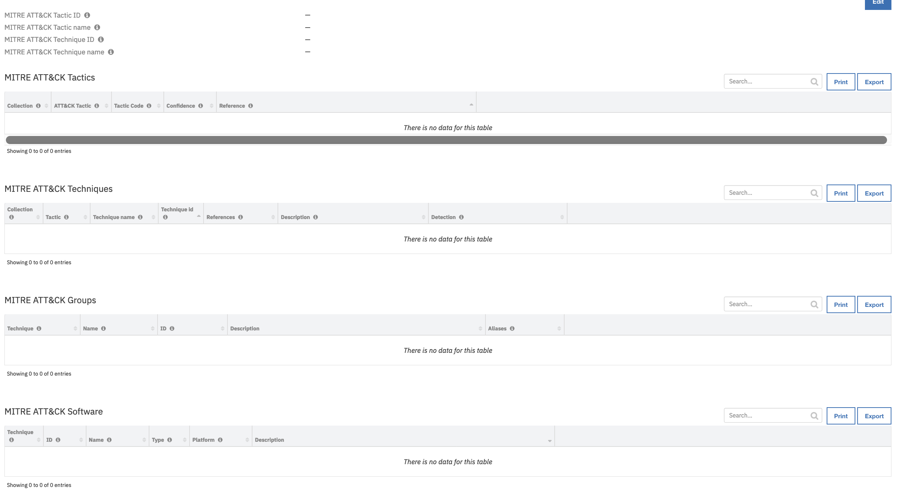

Proofpoint TAP¶
Table of Contents¶
Release Notes¶
Version |
Date |
Notes |
|---|---|---|
1.1.1 |
11/2023 |
Convert all scripts to Python3 |
1.1.0 |
6/2023 |
Playbook support; Add siem_event_types app.config parameter to query threats using different TAP /siem endpoints |
1.0.3 |
8/2020 |
Fix for event filtering |
1.0.2 |
5/2020 |
Fix for Poller |
1.0.1 |
4/2020 |
Bugfix |
1.0.0 |
12/2019 |
Initial release |
1.1 Changes¶
Playbooks¶
In v1.1, the existing rules and workflows have been replaced with playbooks. This change is made to support the ongoing, newer capabilities of playbooks. Each playbook has the same functionality as the previous, corresponding rule/workflow.
If upgrading from a previous release, notice that the previous release’s rules/workflows remain in place. Both sets of rules and playbooks are active. For manual actions, playbooks will have the same name as it’s corresponding rule, but with “(PB)” added at the end.
You can continue to use the rules/workflows. But migrating to playbooks will provide greater functionality along with future app enhancements and bug fixes.
User specified SIEM endpoints¶
A new app.config setting siem_event_types is provided to allow the user to specify which Proofpoint /siem endpoints to query when converting TAP threats into SOAR incident/cases. The parameter siem_event_types is a comma-separated list with the following possible values:
clicks_blocked
messages_blocked
messages_delivered
siem_issues
siem_all
If the siem_event_types parameter is not specified, the default behavior is to use the /siem/all endpoint (siem_all), which is the endpoint used in versions of the app prior to 1.1.0.
See the Proofpoint documentation for more information on the SIEM API: https://help.proofpoint.com/Threat_Insight_Dashboard/API_Documentation/SIEM_API
Overview¶
Proofpoint Targeted Attack Protection (TAP) helps you stay ahead of attackers with an innovative approach that detects, analyzes and blocks advanced threats before they reach your inbox. This includes ransomware and other advanced email threats delivered through malicious attachments and URLs.

Key Features¶
The Proofpoint TAP function package provides the following features:
Poll detailed information from several types of TAP events in a SIEM-compatible, vendor-neutral format. This includes Blocked or permitted clicks to threats recognized by URL Defense and Blocked, and delivered messages containing threats recognized by URL Defense or Attachment Defense. Create SOAR cases from polled threat data.
Get detailed forensic evidences about individual threats or campaigns observed in their environment. These evidences could be used as indicators of compromise to confirm infection on a host, as supplementary data to enrich and correlate against other security intelligence sources, or to orchestrate updates to security endpoints to prevent exposure and infection.
Pull specific details about campaigns, including their description, the actor, malware family, and techniques associated with the campaign and the threat variants which have been associated with the campaign.
Requirements¶
This app supports the IBM Security QRadar SOAR Platform and the IBM Security QRadar SOAR for IBM Cloud Pak for Security.
SOAR platform¶
The SOAR platform supports two app deployment mechanisms, Edge Gateway (formerly App Host) and integration server.
If deploying to a SOAR platform with an Edge Gateway, the requirements are:
SOAR platform >=
45.2.0.The app is in a container-based format (available from the AppExchange as a
zipfile).
If deploying to a SOAR platform with an integration server, the requirements are:
SOAR platform >=
45.2.0.The app is in the older integration format (available from the AppExchange as a
zipfile which contains atar.gzfile).Integration server is running
resilient_circuits>=49.0.4423.If using an API key account, make sure the account provides the following minimum permissions:
Name
Permissions
Org Data
Read
Function
Read
Incidents
Read, Create
The following SOAR platform guides provide additional information:
Edge Gateway Deployment Guide or App Host Deployment Guide: provides installation, configuration, and troubleshooting information, including proxy server settings.
Integration Server Guide: provides installation, configuration, and troubleshooting information, including proxy server settings.
System Administrator Guide: provides the procedure to install, configure and deploy apps.
The above guides are available on the IBM Documentation website at ibm.biz/soar-docs. On this web page, select your SOAR platform version. On the follow-on page, you can find the Edge Gateway Deployment Guide, App Host Deployment Guide, or Integration Server Guide by expanding Apps in the Table of Contents pane. The System Administrator Guide is available by expanding System Administrator.
Cloud Pak for Security¶
If you are deploying to IBM Cloud Pak for Security, the requirements are:
IBM Cloud Pak for Security >=
1.8.Cloud Pak is configured with an Edge Gateway.
The app is in a container-based format (available from the AppExchange as a
zipfile).
The following Cloud Pak guides provide additional information:
Edge Gateway Deployment Guide or App Host Deployment Guide: provides installation, configuration, and troubleshooting information, including proxy server settings. From the Table of Contents, select Case Management and Orchestration & Automation > Orchestration and Automation Apps.
System Administrator Guide: provides information to install, configure, and deploy apps. From the IBM Cloud Pak for Security IBM Documentation table of contents, select Case Management and Orchestration & Automation > System administrator.
These guides are available on the IBM Documentation website at ibm.biz/cp4s-docs. From this web page, select your IBM Cloud Pak for Security version. From the version-specific IBM Documentation page, select Case Management and Orchestration & Automation.
Proxy Server¶
The app does support a proxy server.
Python Environment¶
Python 3.6 and Python 3.9 are supported. Additional package dependencies may exist for each of these packages:
resilient_circuits>=49.0.4423
Development Version¶
This app has been implemented using:
Product Name |
Product Version |
API URL |
API Version |
|---|---|---|---|
Proofpoint TAP |
N/A |
https://tap-api-v2.proofpoint.com/v2 |
v2 |
Configuration¶
Proofpoint account with a username and password or an API Key and secret which is used to authenticate with the Proofpoint TAP REST API
Installation¶
Install¶
To install or uninstall an App or Integration on the SOAR platform, see the documentation at ibm.biz/soar-docs.
To install or uninstall an App on IBM Cloud Pak for Security, see the documentation at ibm.biz/cp4s-docs and follow the instructions above to navigate to Orchestration and Automation.
App Configuration¶
The following table provides the settings you need to configure the app. These settings are made in the app.config file. See the documentation discussed in the Requirements section for the procedure.
Config |
Required |
Example |
Description |
|---|---|---|---|
base_url |
Yes |
|
Base URL for Proofpoint TAP REST API calls |
cafile |
No |
`` |
Certificate file if required by Proofpoint |
forensics_template |
No |
`` |
Jinja template to override default forensic format |
password |
Yes |
|
Credentials used to authenticate to Proofpoint TAP: password or API secret |
polling_interval |
Yes |
|
Time interval, in minutes, to check for new events. Enter 0 to disable |
score_threshold |
No |
|
Classification for the type of event to import based on the respective threat score |
siem_event_types |
No |
|
Comma-separated list of Proofpoint TAP SIEM endpoints called to import threats into the SOAR platform |
startup_interval |
No |
|
Time interval, in minutes, to check for previous events at startup. Maximum is 60 |
threat_template |
No |
`` |
Jinja template to override default threat description format |
type_filter |
No |
|
Filter used to determine which comma-separated list of types of events to import into the SOAR platform |
username |
Yes |
|
Credentials used to authenticate to Proofpoint TAP: username or API key |
Custom Layouts¶
Create a Proofpoint TAP custom layout and drag the custom fields and the data table like the screenshot below:

Function - Proofpoint TAP Get Campaign¶
Function pulls specific details about campaigns including description, the actor, malware family, techniques and the threat variants associated with the campaign.

Inputs:
Name |
Type |
Required |
Example |
Tooltip |
|---|---|---|---|---|
|
|
No |
|
- |
Outputs:
NOTE: This example might be in JSON format, but
resultsis a Python Dictionary on the SOAR platform.
results = {
"inputs": {
"pp_campaign_id": "68a66f7f-cdd7-4c53-ba0f-2e1760254114"
},
"success": true,
"data": {
"id": "68a66f7f-cdd7-4c53-ba0f-2e1760254114",
"name": "WebMail Phish | URLs | 01-05 June 2023",
"description": "Custom WebMail phishing page, attempting to steal users credentials. \n\nExample senders:\n* 'Mail Admin <admin@yallahomsae.com>'\n* 'Email Support yourcompany.com <server@netbasx.com>'\n\nExample subjects:\n* 'Password Expiration notice'\n* 'Mailbox Config Error - Fix Error'\n\n\n",
"startDate": "2023-06-01T00:00:00.000Z",
"notable": false,
"actors": [],
"families": [
{
"id": "34b3f509-c74c-4d33-a29d-b9b364b9905c",
"name": "Corporate Credential Phishing"
}
],
"malware": [],
"techniques": [],
"brands": [],
"campaignMembers": [
{
"id": "b17ce924d5c75dd1e222f438fda67c526a77783403737613f261980b7bcc7510",
"threat": "https://ipfs.io/ipfs/bafybeicfmpubkjm27jyai3bgvcerhr4ewupxngxvt7kj4yhihb3rfuxq5q/25-06-bg-4ur-we9b-f9wohrng-tg-gwbrww.htmlD#mkavanagh@sensata.com",
"threatStatus": "active",
"type": "url",
"threatTime": "2023-06-01T16:06:36.000Z"
},
{
"id": "fc3cdac565b676f3b5f5610fcf58160617fe83dfd691ee20d72a98990a058808",
"threat": "https://ipfs.io/ipfs/Qmc92zdKqnFZKgnAYyCqSamRCBGaTpsSydmifKDTPMuxmJ#sales@arc-tech.com",
"threatStatus": "active",
"type": "url",
"threatTime": "2023-06-01T06:10:55.000Z"
},
{
"id": "c831966a9c313235f314ffa88c3126f556e9191c70bddea0cc3883ba1d64edd8",
"threat": "https://googleweblight.com/i?u=https://ipfs.io/ipfs/QmRa9DJTfqGctNFazQSQb5fU6kaUBEyvH56czJ3ioEaz9w/?submit=ima@bmigroup.com",
"threatStatus": "active",
"type": "url",
"threatTime": "2023-06-02T13:57:51.000Z"
},
{
"id": "531cb865bb4a8c87090440414dfce5c16dec06e314797576ba4bac500f602bb5",
"threat": "https://ipfs.io/ipfs/bafybeifluccxb2hveire3sevma2galuosmtm2egvpbegknas2bmlcjfykq/#nigel.desouza@tnt.com",
"threatStatus": "active",
"type": "url",
"threatTime": "2023-06-02T14:00:49.000Z"
},
{
"id": "97b31dfdc7621e7daef56e339df8fafc43c8ae71be2c79ef311832281dc1810c",
"threat": "https://ipfs.io/ipfs/bafybeifwtldig24fsmrgbwlm2vr2gll4axhcdrpvdqxlg6akalewirimmi/absupdated.html#agoddard@airmauritius.com",
"threatStatus": "active",
"type": "url",
"threatTime": "2023-06-01T10:30:57.000Z"
},
{
"id": "ad8176b49d94a51aec11e0b5f0dc3257e60f288540315d72e21477a0c73a192d",
"threat": "https://ipfs.io/ipfs/Qmc92zdKqnFZKgnAYyCqSamRCBGaTpsSydmifKDTPMuxmJ#mmole@mightymole.com",
"threatStatus": "active",
"type": "url",
"threatTime": "2023-06-01T01:20:04.000Z"
},
{
"id": "4a5db6fc6c11fd49b2836a4e77ed2284dc656222f73dbb8e59c8990a99edf8a9",
"threat": "https://ipfs.io/ipfs/QmRMD1JBn8FTfUsY1LZCc3G3QjYcCNRyo9cgXQLnG5gUaX#odonnel@fastenal.com",
"threatStatus": "active",
"type": "url",
"threatTime": "2023-06-02T05:18:21.000Z"
}
]
}
}
Example Pre-Process Script:
inputs.proofpoint_campaign_id = artifact.value
Example Post-Process Script:
from datetime import datetime
def add_row_to_campaign_object_dt(object_type, object_id, object_name=None, threat=None, type_of_threat=None, subtype_of_threat=None, threat_time=None):
object_dt = incident.addRow("proofpoint_tap_campaign_object_dt")
object_dt.proofpoint_tap_object_timestamp = datetime.now()
object_dt.proofpoint_tap_campaign_id = artifact.value
object_dt.proofpoint_tap_object_type = object_type
object_dt.proofpoint_tap_object_id = object_id
object_dt.proofpoint_tap_object_name = object_name
object_dt.proofpoint_tap_object_threat = threat
object_dt.proofpoint_tap_object_type_of_threat = type_of_threat
object_dt.proofpoint_tap_object_subtype_of_threat = subtype_of_threat
object_dt.proofpoint_tap_object_threat_time = threat_time
########################
# Mainline starts here #
########################
results = playbook.functions.results.campaign_results
MAX_DATA_TABLE_ROWS = 25
# results and results.data are both a Dictionary
if results is not None:
noteText = "<b>Proofpoint TAP - Get Campaign Information by Campaign ID:</b>"
if results.get("success") is True and results.get("data", None) is not None:
data = results.get("data")
campaign_name = data.get("name", None)
campaign_description = data.get("description", None)
campaign_start_date = data.get("startDate", None)
noteText = u"""{}<br>Campaign was found:
<br>- Campaign ID '{}'
<br>- Name '{}'
<br>- Description '{}'
<br>- Campaign's first threat variants were first observed on '{}'
<br>Campaign objects are saved in the Proofpoint TAP Campaign Object Details Data Table.""".format(noteText, artifact.value, campaign_name, campaign_description, campaign_start_date)
campaign_members_list = data.get("campaignMembers", None)
if len(campaign_members_list) > MAX_DATA_TABLE_ROWS:
noteText = noteText + "<br>Too many campaignMembers found to add to the Campaign Object data table {0}<br>".format(len(campaign_members_list))
else:
for member in campaign_members_list:
add_row_to_campaign_object_dt("CampaignMembers", member.get("id", None), threat=member.get("threat", None), type_of_threat=member.get("type", None), subtype_of_threat=member.get("subType", None), threat_time=member.get("threatTime", None))
families_list = data.get("families", [])
for family in families_list:
add_row_to_campaign_object_dt("CampaignFamily", family.get("id"), family.get("name"))
actors_list = data.get("actors", [])
for actor in actors_list:
add_row_to_campaign_object_dt("Actor", actor.get("id"), object_name=actor.get("name"))
malware_list = data.get("malware", [])
for malware in malware_list:
add_row_to_campaign_object_dt("Malware", malware.get("id"), object_name=malware.get("name"))
techniques_list = data.get("techniques", [])
for technique in techniques_list:
add_row_to_campaign_object_dt("Technique", technique.get("id"), object_name=technique.get("name"))
elif results.get("success") is False and results.get("note_err_text", None) is not None:
noteText = u"""{}
<br>No Campaign information found for campaign ID '{}'.
<br>Error: {}.""".format(noteText, artifact.value, results.get("note_err_text"))
else:
noteText = u"""{} <br>No Campaign information found for campaign ID '{}'.""".format(noteText, artifact.value)
incident.addNote(helper.createRichText(noteText))
Function - Proofpoint TAP Get Forensics¶
Function pulls detailed forensic evidence about individual threats or campaigns observed in their environment.

Inputs:
Name |
Type |
Required |
Example |
Tooltip |
|---|---|---|---|---|
|
|
Yes |
|
- |
|
|
No |
|
- |
|
|
No |
|
- |
|
|
No |
|
- |
|
|
No |
|
- |
Outputs:
NOTE: This example might be in JSON format, but
resultsis a Python Dictionary on the SOAR platform.
results = {
"inputs": {
"incident_id": 2862,
"campaign_id": null,
"threat_id": "7cbbf08ebb723e7986f2369fc6b7e6fec773ff511484da8b643141e8b1aa221c",
"aggregate_flag": null,
"malicious_flag": true
},
"success": true,
"num_reports": 1
}
Example Pre-Process Script:
None
Example Post-Process Script:
None
Script - Example: Proofpoint TAP - Create Artifact for Campaign Object Name or Threat¶
Script creates an Artifact for Proofpoint TAP Campaign Object Name or Threat based on the selected datatable row.
Object: proofpoint_tap_campaign_object_dt
Script Text:
# Script creates an artifact for Proofpoint TAP Campaign Object Name or Threat based on the selected datatable row.
# Artifact description
artifact_description = u"""Created by Proofpoint TAP Get Campaign results for Campaign ID '{}', Type of Campaign Object '{}', Object ID '{}'""".format(
row.proofpoint_tap_campaign_id,
row.proofpoint_tap_object_type,
row.proofpoint_tap_object_id)
# Artifact type
artifact_type = "String"
# Artifact value
object_name = row.proofpoint_tap_object_name
object_threat = row.proofpoint_tap_object_threat
if object_name is not None:
artifact_value = object_name
else:
artifact_value = object_threat
# Create an Artifact
if artifact_value:
incident.addArtifact(artifact_type, artifact_value, artifact_description)
Data Table - Proofpoint TAP Campaign Object Details¶

API Name:¶
proofpoint_tap_campaign_object_dt
Columns:¶
Column Name |
API Access Name |
Type |
Tooltip |
|---|---|---|---|
Campaign ID |
|
|
- |
Name |
|
|
- |
Object Id |
|
|
- |
Subtype of Threat |
|
|
- |
Threat |
|
|
- |
Threat Time |
|
|
- |
Timestamp |
|
|
- |
Type of Campaign Object |
|
|
- |
Type of Threat |
|
|
- |
Custom Fields¶
Label |
API Access Name |
Type |
Prefix |
Placeholder |
Tooltip |
|---|---|---|---|---|---|
Proofpoint Campaign ID |
|
|
|
- |
- |
Proofpoint Message ID |
|
|
|
- |
- |
Custom Artifact Types¶
Display Name |
API Access Name |
Description |
|---|---|---|
Proofpoint Campaign ID |
|
An identifier for the campaign |
Proofpoint Threat ID |
|
The unique identifier associated with threat |
Playbooks¶
Playbook Name |
Description |
Object |
Status |
|---|---|---|---|
Example: Proofpoint TAP - Aggregate Forensics by Campaign ID (PB) |
Returns aggregate forensics for an entire campaign based on the given campaign identifier. Results are saved in a note and attachment. |
artifact |
|
Example: Proofpoint TAP - Aggregate Malicious Forensics by Threat ID (PB) |
Imports additional forensic information based on the given threat identifier. It returns aggregate forensics for the given threat identifier, which is filtered to include malicious results only. Results are saved in a note and attachment. |
artifact |
|
Example: Proofpoint TAP - Aggregate Malicious Forensics for Entire Campaign Associated with Threat ID (PB) |
Imports additional forensic information based on the given threat identifier. If the threat has been associated with a campaign, it returns aggregate forensics for the entire campaign. Otherwise, it returns aggregate forensics for the individual threat. The returned forensics are filtered to include malicious results only. Results are saved in a note and attachment. |
artifact |
|
Example: Proofpoint TAP - Create Artifact for Campaign Object Name or Threat (PB) |
None |
proofpoint_tap_campaign_object_dt |
|
Example: Proofpoint TAP - Get Campaign Information by Campaign ID (PB) |
Imports detailed information for given campaign identifier, including description, the actor, malware family, techniques and the threat variants associated with the campaign. Results are saved in a note and data table. |
artifact |
|
Troubleshooting & Support¶
Refer to the documentation listed in the Requirements section for troubleshooting information.
For Support¶
This is an IBM supported app. Please search ibm.com/mysupport for assistance.